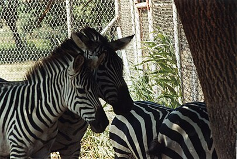

ზებრები, ცხენების გვარის (Equus) ძუძუმწოვართა ქვეგვარი და ყველა სახეობის ზებრის საერთო სახელი. ზებრების სხეულის სიგრძეა 2-2,4 მ, კუდისა 47-57 სმ, სიმაღლე ნიდაოში — 1,2-1,4 მ, წონა 350 კგ-მდე. სხეული შეფერილი აქვთ მუქი და ღია ფერის ზოლებით, რაც მათ შეუმჩნეველს ხდის, განსაკუთრებით სავანებში. ფაფარი მოკლეა, კუდი გრძელი ბალნის ფუნჯით ბოლოვდება. განარჩევენ ზებრების 3 სახეობას: მთის ზებრა (Equus zebra), გრევის ზებრა (Equus grevyi) და კვაგა (Equus quagga). ზებრები გავრცელებულია აღმოსავლეთ, ცენტრალურ დასამხრეთ აფრიკაში. მომთაბარე ცხოველებია. ცხოვრობენ 10-30 სულიან ჯოგებად. ბინადრობენ ღია ველებზე (მთის ზებრა ზოგჯერ მთაში 2000 მ-ზეც გვხვდება). იკვებებიან ბალახით. მაკეობა 346-369 დღე გრძელდება. შობენ 1-2 ნაშიერს. ლამაზი ტყავისთვის უმოწყალოდ ანადგურებდნენ, რის გამოც მათი რაოდენობა ძლიერ შემცირდა. ზოგი სახეობა კი სულ ამოწყდა. ამჟამად მათზე ნადირობა ან სრულიად აკრძალულია, ან დაშვებულია მხოლოდ ზოგ რაიონში. ზებრები კარგად იტანენ ტყვეობას, რეგულარულად მრავლდებიან, მაგრამ ძნელად თვინიერდებიან. ზებრები აკლიმატიზებულია ასკანია-ნოვაში. ზებრები მოიცავს შემდეგ სახეობებსა და ქვესახეობებს (ქვეგვარი Dolichohippus, სადაც მხოლოდ ერთი სახეობაა გაერთიანებული არ ეკუთვნის ზებრების ქვეგვარს, მაგრამ ერთიანდება საერთო სახელ ზებრებში):
